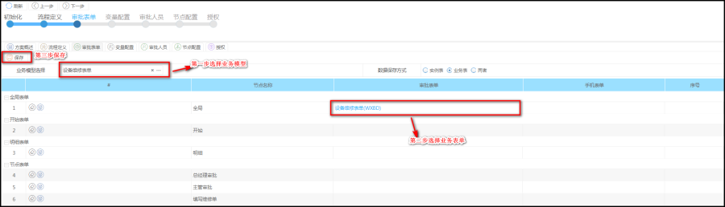
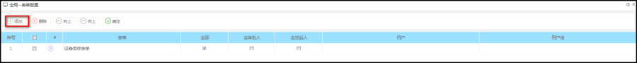
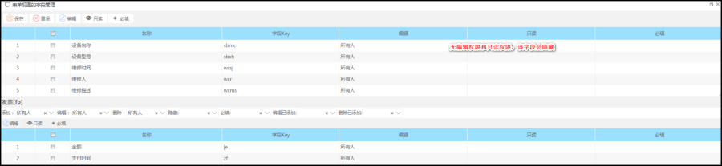
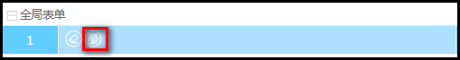
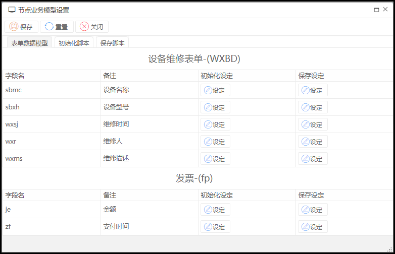

功能描述
审批表单在方案配置中选取符合走审批流程的业务模型,先绑定单据对应的业务模型，然后为流程中的每个节点及开始节点绑定业务单据。可在流程定义节点上配置业务模型数据设置,表单授权等配置。
操作步骤
如下图所示：

【属性说明】
1.业务模型选择:选取在线表单生成的业务模型,再根据模型选取表单
2.数据保存方式:流程表单保存数据方式 实例表：数据只能在流程中显示，不保存到数据库；业务表：数据可以在流程中显示，也保存到数据库。
3.业务模型数据设置:针对节点设置一些初始数据
4.审批表单:设置流程节点审批业务表单
5.手机表单:设置流程对应手机表单
2.在弹出的表单选择器中，点击添加对应的表单。因为每个节点可以绑定一个或多个业务单据，所以在下图中可以选择多个不同的表单。

【说明】
1.表单授权:对表单中的所有字段进行编辑,只读授权
2.全部:设置全部人可以在节点查看审批表单,一般设置全部
3.含审批人:设置节点只有审批人可以查看表单,比如:有A,B,C三个节点,如果A节点审批完,B节点还是当前审批人就可查看表单
4.含发起人:设置节点只有发起人可以查看表单,比如:有A,B,C三个节点,如果A节点审批完,B节点还是当前发起人就可查看表单
5.用户:设置节点一些用户可以查看表单
6.用户组:设置节点一些用户组可以查看表单
【表单授权操作指导】
功能描述：实现流程审批的人性化权限控制，可以设置编辑、只读权限。
说明：不进行授权的话所有字段默认拥有编辑权限。
读权限：只能读，不能编辑。
实现场景：
设置读权限：
组以上的审批，设置全部只读，给用户组中部分用户设置编辑权限，设置的用户可以进行编辑字段。
如下图所示：

3.在审批表单中,点击节点中业务模型数据设置。业务模型数据设置是针对流程定义节点中设置初始化数据,点击下方按钮进入设置界面。


【说明】
表单数据模型:设置节点表单字段数据(如初始化设定和保存设定上都设置值，以保存设定值为准。)
初始化脚本:脚本是写Groovy脚本,也就java脚本
静态写法:
import com.redxun.saweb.context.ContextUtil;
return ContextUtil.getCurrentUser().getUsername();
注入写法:
return processScript.getCurUserId();
保存脚本:脚本是写Groovy脚本,也就java脚本
静态写法:
import com.redxun.saweb.context.ContextUtil;
return ContextUtil.getCurrentUser().getUsername();
注入写法:
return processScript.getCurUserId();